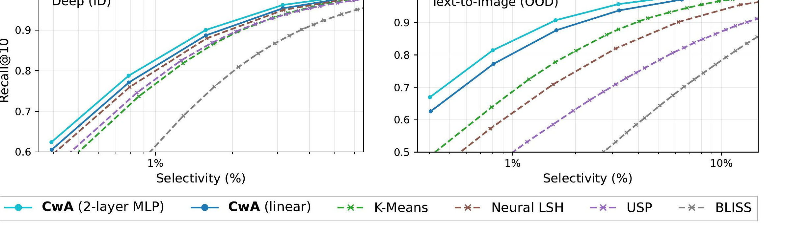
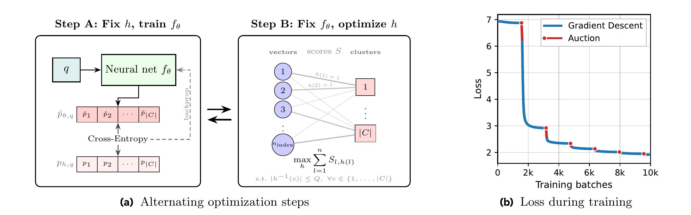
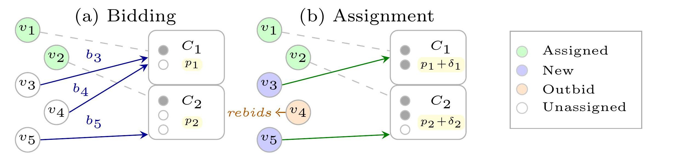
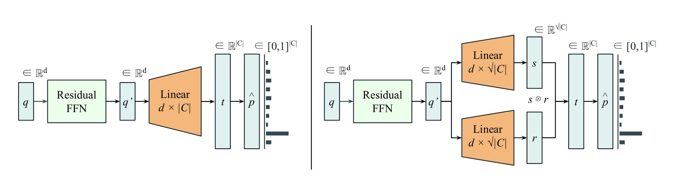
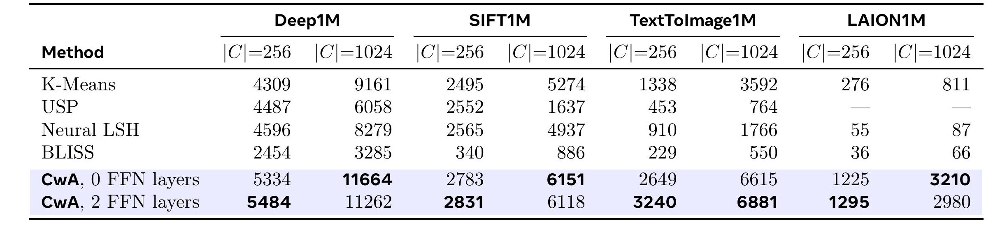
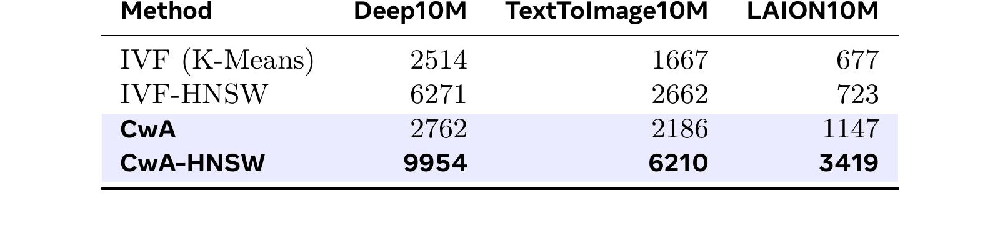
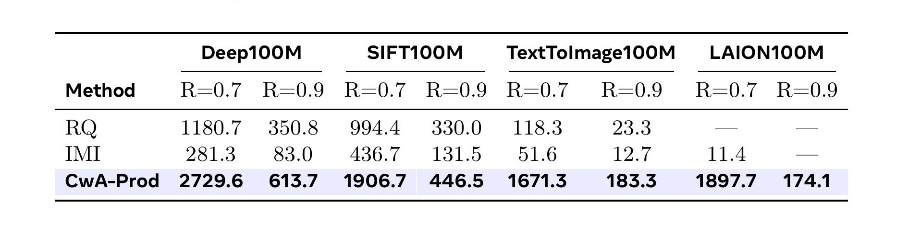
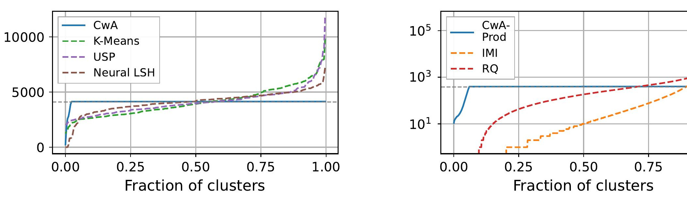
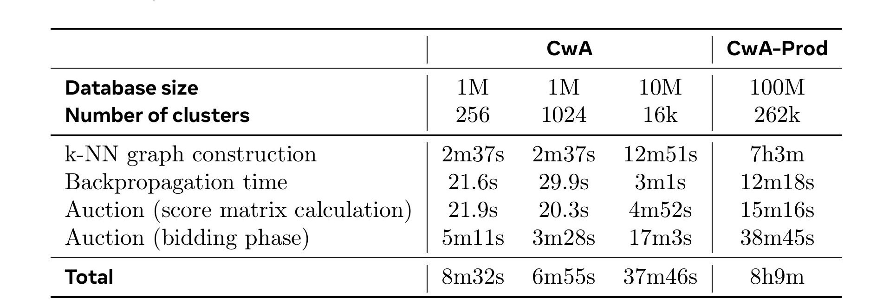
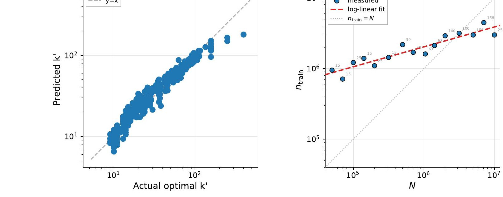

Meta FAIR CwA：把向量库分区与查询探测拆开，再用容量拍卖闭环优化
论文 Cluster with Auctions for Vector Search 由 Swann Bessa、Pierre Fernandez、Gergely Szilvasy、Matthijs Douze 与 Hervé Jégou 完成，作者均来自 Meta FAIR。论文于 2026 年 7 月 15 日公开在 arXiv:2607.13728。本文把方法简称为 CwA（Cluster with Auctions）；截至本轮核验，arXiv 摘要页与论文正文均未给出和本文一一对应的独立代码或项目页，因此复现仍需等待作者实现或依据论文细节自行搭建。
分区式近似最近邻检索中，数据库分区与查询探测承担不同任务；强迫它们共享同一分配函数，在查询与数据库分布不一致时尤其不理想，同时不平衡分区还会引入不可控的候选量和延迟方差。
1. 背景和问题
1.1 分区式 ANN 实际上包含两个角色
大规模向量检索很少对全库逐点计算精确距离。经典 IVF 先用 K-Means 把数据库向量分进若干倒排簇，查询到来时再找最近的若干中心，只扫描这些簇中的候选。表面上看，“数据库向量属于哪个簇”与“查询应该访问哪个簇”都可以写成一次最近中心判断，因此传统系统经常复用同一套中心。CwA 的出发点是：这两个动作的输入、目标和约束并不相同。数据库分区是对一批固定对象的离散安排，需要控制每个簇装入多少向量；查询探测则是条件预测，需要根据查询分布判断真实近邻会落在哪些簇，并为多个簇排序。
论文用 \(X=(x_\ell)_{\ell=1}^{n_{\mathrm{index}}}\in\mathbb{R}^d\) 表示固定向量库，以 \(h(\ell)\in C\) 表示数据库向量编号 \(\ell\) 的簇。查询网络 \(f_\theta(q)\in[0,1]^{|C|}\) 输出簇概率，取分数最高的 \(m\) 个簇，在这些簇内做精确距离计算，得到近似近邻集合 \(\widehat N_k(q)\)。检索质量仍按标准召回率计算：
效率则由访问候选比例 selectivity 或单线程 CPU 上的 QPS 衡量。增加 \(m\) 通常提升召回，也会扩大候选量；一个好的分区和探测器，应当在相同召回下访问更少的数据库向量。CwA 并不改变簇内精确计算本身，而是集中优化“真实近邻被聚在什么簇”与“查询用多小的 \(m\) 能命中这些簇”。
1.2 查询与数据库分布错位为何破坏共享中心
若查询与数据库同分布，数据库上学到的几何中心通常也是合理的查询路由器。但跨模态检索中常见另一种情形：数据库是图片向量，查询来自文本；二者在同一嵌入空间可比较，却不服从同一分布。只根据数据库重构误差得到的 K-Means 中心没有直接看到真实查询落点，更没有被要求把查询的真实近邻聚成少量可探测簇。Neural LSH、USP、BLISS 等神经分区方法虽然引入网络或交替训练，但多数仍让同一模型兼任数据库分区与查询探测。每次网络更新会同时移动两端的目标，使“探测器适应当前分区”和“分区适应查询需求”相互干扰。

Figure 1 把问题放进两种分布条件。左侧 Deep 属于同分布，CwA 的线性版和两层 MLP 版已经能匹配或优于 K-Means、Neural LSH、USP、BLISS；右侧 Text-to-Image 存在明显查询—数据库分布偏移，曲线间距显著拉大。横轴是实际扫描的数据库比例，越靠左越省计算；纵轴是 Recall@10。相同召回处，CwA 只需访问更少向量。更值得注意的是，线性 CwA 也领先更深的神经基线，这说明收益不能简单归因于“网络更大”，而主要来自监督目标和角色解耦：网络专门学习查询应探测哪些簇，数据库分配再围绕这个预测器重排。从曲线形状看，OOD 条件下旧神经基线甚至落到 K-Means 右侧，说明若监督来源与真实 query distribution 不一致，更强的函数拟合能力可能只会更精确地学习错误路由目标。
1.3 平衡不是美观约束，而是延迟约束
分区质量不能只看平均 selectivity。若少数簇极大，两个查询即使都探测一个簇，实际需要比较的向量数也可能相差一个数量级。在线服务关心的是尾延迟和资源峰值，簇大小长尾会把平均候选数相近的索引变成不稳定系统。K-Means 往往“相对平衡”但没有严格上限，乘积量化把两个相关分类器组合后更可能产生强烈不均。Balanced K-Means 能强制平衡，却在大规模 assignment 上成本高，也没有围绕真实查询分布优化 probing。
CwA 因此提出三项同时成立的设计要求：数据库分区 \(h\) 与查询探测 \(f_\theta\) 必须是两个对象；两者要由真实查询及其近邻共同驱动；每簇大小要有显式容量上限。论文的关键不是先单独训练一个平衡聚类器、再训练分类器，而是把二者置于同一交叉熵目标中交替更新，使每次分区变化都服务于当前查询探测损失，每次探测器更新也适应当前分区。对推荐系统而言，这相当于不再把“物料如何分桶”和“用户请求该访问哪些桶”视作同一个向量量化问题，而是将离线库组织与在线请求路由按各自约束联合设计。
从优化对象看，现有路线之间的差别可以更明确地拆开。IVF 的中心既决定数据库 membership，又充当查询打分原型，优点是构建简单、插入规则清楚，缺点是目标停留在数据库重构误差。Neural LSH 先利用数据库近邻图构造平衡 partition，再学习一个网络预测该 partition，探测器仍没有反过来改变数据库分配。USP、BLISS 引入反复 repartition，但同一个模型参数同时影响两个角色，网络一步更新就会改变它下一步试图拟合的标签。CwA 让 \(h\) 成为独立离散变量，允许数据库向量仅凭编号被放到某个簇；这样不再要求“数据库向量坐标经过同一网络后也应预测到该簇”，释放的自由度正是它能围绕 query loss 重排向量的来源。
这种自由度也解释了论文为何必须承担组合优化成本。若 \(h\) 仍由最近中心或网络 argmax 唯一决定，就无法在保证每簇容量的同时独立选择对查询最有利的 assignment；若只在训练后把超大簇随机拆开，又会破坏网络已经学到的近邻簇分布。容量 auction 把“向量对簇的查询收益”和“热门簇槽位稀缺”放到同一决策里，才能在不退回几何中心约束的前提下得到严格上限。它并非对 K-Means 的小修补，而是把索引建设从连续中心学习改写为神经预测与离散资源分配的交替问题。
还要区分 CwA 所谓的 query-aware 与个性化。论文使用大量训练查询及其 ground-truth neighbors 学一个总体 probing function，并未给每个用户维护独立分区，也没有把点击反馈直接写进目标。训练 query distribution 若混合了多个地区、语言或流量层级，模型会优化其加权平均；低频群体仍可能被主流查询淹没。迁移到推荐系统时，应该明确训练查询的采样权重和时间窗口，并按人群报告 recall-selectivity，而不能因方法“使用查询监督”就默认所有用户都获得同等收益。分群采样与时效回放应当成为上线前的基本检查，而不是事后解释。
2. 方法
2.1 用查询真实近邻构造簇级软监督
符号解释：\(\mathcal D_{\mathrm{train}}\) 是查询监督集，\(q_i\) 是第 \(i\) 个训练查询，\(N_{k'}(q_i)\) 是它在固定数据库 \(X\) 中的 \(k'\) 个真实近邻，\(n_{\mathrm{train}}\) 是训练查询数。\(k\) 是线上最终返回的近邻数，论文实验固定关注 Recall@10；\(k'\) 是构造训练标签的邻居宽度，可以大于 \(k\)。给定当前分区 \(h\)，查询 \(q_i\) 的近邻在每个簇上的占比定义为
符号解释：\(p_{h,q_i}(c)\) 是当前分区下查询近邻落入簇 \(c\) 的比例，\(h(\ell)\) 是数据库向量 \(\ell\) 的簇编号，\(\mathbf 1[\cdot]\) 是指示函数。这不是单标签分类。若一个查询的近邻分散在四个簇，软标签就把质量分配给这四个簇；探测网络 \(f_\theta(q_i)\) 要逼近这一分布。取 top-\(m\) 时，高概率簇应尽量覆盖真实近邻。用 \(k'>k\) 会把监督摊到更多相关向量和簇，降低训练查询有限时的过拟合，代价是标签与精确 Recall@\(k\) 目标略有偏离。论文不是把 \(k'\) 当任意超参，而是在附录进一步拟合其与库规模、训练查询量的关系。
这一监督方式直接暴露了 CwA 与 K-Means 的目标差异。K-Means 最小化数据库向量到中心的重构误差，数据库几何紧凑不等于查询的真实近邻集中在少数可预测簇。CwA 的标签由查询近邻分布产生，因而优化的是“查询需要扫描哪里”。同时，\(h\) 仍只定义固定数据库编号到簇的映射，不要求用同一个网络对新数据库向量即时分类；这种做法换来更大的离线分配自由度，也形成固定数据库这一适用边界。
2.2 一个目标，两类更新
符号解释：\(\theta\) 是 probing network 参数，\(h\) 是数据库 assignment，\(\operatorname{CE}\) 是软标签交叉熵，\(Q\) 是每簇容量上限，\(C\) 是簇集合。线上探测 \(m\) 个簇时，候选规模最多为 \(mQ\)，于是训练约束直接变成推理侧计算上界。目标中 \(\theta\) 与 \(h\) 相互依赖，论文采取块坐标式交替优化。固定 \(h\) 时，所有 \(p_{h,q_i}\) 都确定，问题退化为普通交叉熵训练，通过反向传播更新探测网络。固定 \(\theta\) 时，预测概率固定，作者把交叉熵按数据库向量重排；对向量 \(\ell\) 分配到簇 \(c\) 的得分可写成
符号解释：\(\widehat p_{\theta,q_i}(c)\) 是网络对查询 \(q_i\) 属于簇 \(c\) 的预测概率，\(S_{\ell,c}\) 汇总所有把向量 \(\ell\) 当作真实近邻的训练查询对该簇的负对数概率。若某向量经常是某类查询的真实近邻，而网络对某个簇给出高概率，把它放进该簇会获得更好的 assignment score。固定 \(\theta\) 后的分区问题因此成为
符号解释：目标对每个 \(\ell\) 只取最终簇 \(h(\ell)\) 对应的得分，并要求任意簇 \(c\) 的占用不超过 \(Q\)。它是带容量的线性 assignment，而不是连续聚类。线性化是方法能够使用拍卖算法的关键：网络负责把查询偏好变成每个“向量—簇”组合的分数，组合优化负责在全局容量竞争下选择分配。由于所有向量同时争夺有限槽位，不能把每个向量各自取 argmax 当作等价替代。

Figure 3 左侧给出闭环：步骤 A 固定数据库分区，查询网络以当前近邻簇分布为标签反向传播；步骤 B 固定网络，累积 score matrix 后通过容量 assignment 更新 \(h\)。右侧蓝线是梯度阶段，红段是拍卖重分区。曲线显示每次重分区后评估损失继续下降，说明 auction 不是与学习目标无关的平衡后处理，而是在同一目标中改进离散变量。每个红色短段之后，新的 \(h\) 会重算下一阶段软标签，因此网络并不是在追逐一个任意漂移目标，而是在两个精确子问题之间传递状态。需要谨慎的是，这仍是交替优化的经验收敛轨迹，并不等价于对非凸联合目标给出全局最优保证；初始化因而很重要，普通 CwA 从 K-Means 开始，CwA-Prod 从 PQ assignment 开始。
2.3 容量拍卖如何产生平衡分区
可以把每个簇想成有 \(Q\) 个槽位，每个数据库向量是竞买者。对尚未分配的向量 \(\ell\)，簇 \(c\) 的净效用是 \(S_{\ell,c}-p_{c,s_c^\star}\)，其中 \(p_{c,s_c^\star}\) 是簇内当前最便宜槽位的价格。向量选择净效用最高的簇，再用“最好效用与次好效用之差加 \(\epsilon\)”提高报价。簇接收最高价竞买者；若目标槽已有占用者，旧占用者被挤出，在下一轮重新竞价。热门簇的槽位价格持续上升，迫使边际收益较低的向量流向次优簇，最终在容量上限内最大化总 score。

Figure 2 用五个向量和两个簇展示一次迭代。左侧未分配向量比较“匹配分数减槽位价格”后出价；右侧最高报价获得槽位，橙色的旧占用者被挤出并重新竞价。价格不是线上索引的业务价格，而是组合优化中的对偶式稀缺信号：当许多向量都想进入同一簇，槽位变贵，只有把它放进该簇能显著降低查询损失的向量愿意继续竞争。容量约束因此不是训练后的裁剪，而是从每轮 assignment 内部改变分区选择。实验设置执行 10000 次 bidding step，\(\epsilon=10^{-2}\)；仍未分配的极少量向量再放入得分最高且未满的槽位，论文称其比例低于 0.1%。
直接保存 \(S\in\mathbb R^{n_{\mathrm{index}}\times|C|}\) 会成为显存瓶颈。论文有两项普通 CwA 优化。第一，若 \(z_{i,c}\) 是 softmax 前 logits，则 \(\log\operatorname{softmax}(z)\) 中的归一化项对固定向量的簇选择无关，因此 assignment 可以使用
符号解释：\(z_{i,c}\) 是查询 \(q_i\) 在簇 \(c\) 上的 raw logit，\(S'_{\ell,c}\) 与原 score 只差一个对簇编号无关的常数，因此不改变 assignment 最优解。该变换省去全量 softmax 与 log。第二，先对数据库做 K-Means，只允许每个向量在最近的 \(\kappa\) 个中心对应簇中竞价，其余分数视为负无穷。\(\kappa\) 通常取簇数的 5%-10%，论文报告显存降低约 5-10 倍。这个稀疏先验提升可运行性，却也可能把全局更优但几何较远的查询驱动分配排除在候选之外，属于复现时必须单独消融的近似。
2.4 三种 probing 架构与训练、推理边界
普通 CwA 用 \(M\) 个 residual gated-SiLU FFN block 得到查询表示 \(q'\)，再接大小为 \(d\times|C|\) 的线性层和 softmax。\(M=0\) 时就是线性模型，参数量与 K-Means 中心同阶；\(M=2\) 提供更强的非线性。更深并未继续改善速度—准确率权衡，因为模型前向本身也计入查询延迟。簇数超过 \(10^4\) 后，全量计算最后一层并取 top-\(m\) 会成为瓶颈，CwA-HNSW 把输出分数改写为
符号解释：\(q'\) 是 residual FFN 输出，\(m_i\) 是第 \(i\) 个输出原型，\(\lambda\) 是共享可学习温度，\(t_i\) 是簇分数。寻找最大 \(t_i\) 等价于在 \(\{m_i\}\) 中做欧氏最近邻，因此可以用 HNSW 近似选择簇。训练阶段仍学习分区和 probing；推理阶段只运行查询网络、HNSW top-\(m\) 和簇内距离计算，不再执行拍卖。温度只改变 softmax 锐度，不改变按距离得到的精确簇排序。
当库扩展到 100M、需要约 262k 个细粒度簇时，完整 \(d\times|C|\) 输出层和 score matrix 都太大。CwA-Prod 用两个 \(\sqrt{|C|}\) 维线性输出 \(r,s\)，分别选择笛卡尔积的两个坐标；联合簇 \((i,j)\) 得分为
符号解释：\(r_i\) 与 \(s_j\) 是两个小输出头在坐标 \(i,j\) 上的值，\(\gamma_{i,j}\) 是联合簇的可学习交互系数，\(g_\theta(r,s)_{i,j}\) 是最终 logit。参数复杂度从 \(O(d|C|)\) 降到约 \(O(d\sqrt{|C|}+|C|)\)。assignment score 也可分解为两张 \(n_{\mathrm{index}}\times\sqrt{|C|}\) 矩阵和 \(\gamma\)，而不是完整的 \(n_{\mathrm{index}}\times|C|\) 矩阵。推理 top-\(m\) 因 \(\gamma_{i,j}\) 可学习，不能直接使用 IMI 的简单优先队列；作者用每次向量化处理 16 个查询并以 reservoir bucket 维护 top-\(k\)。

Figure 4 左侧是普通 CwA：residual FFN 后接一个覆盖全部簇的线性分类头；右侧把分类头拆成两个小投影，再以加权 pairwise sum 生成联合簇分数。拆分降低的不是数据库向量数量，而是簇分类头和拍卖 score 的维度。它也引入新的表达假设：大簇空间必须可由两个小 codebook 的组合加交互系数描述。CwA-Prod 在实验中显著优于 RQ/IMI，但论文没有把所有可能的 product interaction 形式、top-\(k\) 算法误差和 \(\gamma\) 正则化做系统消融，工程复现不能只照搬最终公式而忽略这些实现选择。
完整训练流程采用 20 轮交替：每轮 1600 个 batch、batch size 4096 的反向传播，再进行拍卖；最后固定分区训练 80000 个 batch。1M 与 10M 库分别使用 5M 与 20M 训练查询，100M CwA-Prod 使用 50M 查询。优化器为 Adam，初始学习率 \(3\times10^{-3}\) 并使用 cosine schedule。1M 用单张 H100，10M 与 100M 用 8 张 H100。这些数字说明 CwA 是离线重训练型索引，而不是在每次请求中进行在线聚类；服务侧收益必须与近邻图构建、定期重分区和静态库假设一起评估。
3. 实验结果
3.1 数据集、基线与统一口径
实验覆盖四个向量检索基准。Deep 的维度为 96、使用欧氏距离，SIFT 维度 128、使用欧氏距离，两者代表查询与库同分布；Text-to-Image 维度 200、使用内积，LAION 维度 512、使用余弦距离，两者代表查询—数据库分布偏移。SIFT、Deep、Text-to-Image 的评估查询各为 10000，LAION 也抽取 10000 条。精度统一看 Recall@10，效率看扫描比例和在 Intel Xeon 6342 2.80GHz 单线程、batch size 128 上测得的 QPS。检索调用 Faiss 的 search_preassigned，CwA-Prod 的 top-\(k\) 为手写 C++，因此 QPS 已包含簇选择与簇内搜索，但不同实现成熟度仍可能影响绝对数值。
训练规模也随索引规模变化，并非用同一预算硬比较。1M 索引使用 5M 训练查询和 \(k'=50\)，10M 使用 20M 查询与 \(k'=100\)，100M CwA-Prod 使用 50M 查询与 \(k'=100\)。这让每个规模都接近作者根据 scaling law 选择的工作点，能够回答“方法调好后可达到什么水平”，却不能单独回答“固定训练查询量时谁更数据高效”。同时，OOD 数据上的训练查询仍来自目标 query distribution；如果部署时只有数据库向量而没有代表性查询，论文所展示的 OOD 优势不会自动出现。评测解读必须把 query supervision 可得性视作方法输入条件。
普通 CwA 在 1M 库上对比 K-Means、USP、Neural LSH、BLISS；10M/65536 簇加入 IVF-HNSW 与 CwA-HNSW；100M/262144 簇时对比同样只需 \(O(\sqrt{|C|})\) codebook 的 RQ 与 IMI。这个基线选择有规模现实，但并非所有设置都包含同一方法。尤其 BLISS 原本可配合多个 partition，本文只评估单 partition；层次 K-Means、图分区或其他现代向量数据库索引也没有在 100M 设置中完整出现。因此应把结论限定为论文实现与所列基线，而不是“已经全面胜过所有 ANN 系统”。
3.2 1M：线性 probing 已经超过更深基线

Table 1 固定 Recall@10=0.8，同时给出 256 与 1024 簇。Deep 上，256 簇时 CwA 两层版为 5484 QPS，线性版为 5334，优于 Neural LSH 的 4596；1024 簇时线性版 11664 反而略高于两层版 11262，说明高吞吐区模型前向成本可以抵消更好分区带来的候选减少。SIFT 上两种 CwA 也在两档簇数领先。最强差异来自 OOD：Text-to-Image 的 256 簇从 K-Means 1338 提升到 3240，1024 簇从 3592 提升到 6881；LAION 的 256 簇从 276 提升到 1295，接近论文所述 4.7 倍。这里最重要的证据不是所有数字都由深模型刷新，而是 0-FFN 线性版也稳定超过 Neural LSH、USP、BLISS，支持“解耦和 query-aware assignment 比单纯加深网络更关键”。
不过表格只固定一个 recall operating point。附录完整曲线显示优势覆盖较宽区间，但线性版和两层版会随 recall、簇数和 probing 成本交叉。线上不能据 Table 1 直接固定 \(M=2\)：若请求预算极紧、只探测少量簇，线性层的 1.65-2.85 微秒级前向更有吸引力；若更高召回需要访问较多簇，分区质量可能成为主导。论文 Table 9 还显示 256 簇时线性 CwA 约 24.6k 参数，与 K-Means 相同，两层版约 135.6k，Neural LSH 约 709.4k。模型大小不是收益的充分解释。
3.3 10M：更好的分区与更快的簇选择可以叠加

Table 2 仍固定 Recall@10=0.8。Deep10M 上普通 IVF 为 2514 QPS，IVF-HNSW 通过加速中心检索升到 6271；普通 CwA 为 2762，仅靠更好分区略有提升；CwA-HNSW 达到 9954。Text-to-Image 对应为 1667、2662、2186、6210，LAION 为 677、723、1147、3419。结果说明 HNSW 不是替代 CwA：HNSW 解决“怎样更快找到高分簇”，CwA 解决“簇本身怎样组织、网络怎样给真实近邻簇高分”，两者叠加后才得到最大吞吐。
附录的搜索耗时分解提供了机制证据。在 SIFT10M、Recall 0.9 下，CwA 的 cluster search 为 0.25ms，接 HNSW 后降到 0.09ms；两者 dataset search 都为 0.31ms，因为底层分区未变。IVF-HNSW 的 cluster search 同样为 0.09ms，但 dataset search 为 0.36ms，仍高于 CwA-HNSW。这把端到端优势拆成两个可检验部分：HNSW 缩短簇选择，query-aware 平衡分区减少簇内候选。若迁移到生产向量服务，应该分别测 routing time、scanned vectors、distance time 和尾延迟，不能只比较一个总 QPS。
3.4 100M：乘积簇在 OOD 条件下收益最大

Table 3 比较 CwA-Prod、RQ 与 IMI。在 Deep100M，Recall 0.7/0.9 时 CwA-Prod 为 2729.6/613.7 QPS，RQ 为 1180.7/350.8；SIFT100M 为 1906.7/446.5，对比 RQ 994.4/330.0。OOD 差距更大：Text-to-Image100M 在 Recall 0.7/0.9 下，CwA-Prod 为 1671.3/183.3，RQ 只有 118.3/23.3；LAION 上 CwA-Prod 仍有 1897.7/174.1，而 IMI 在高 recall 处未给出有效结果。附录在 Recall 0.8 处报告 Text-to-Image 约 671 对 60 QPS，约 11 倍，强调 query-aware 分区对分布偏移的价值。
这些提升也包含乘积架构和实现差异，不能完全归因于 auction。RQ/IMI 以重构或分解几何为目标，CwA-Prod 用大量真实查询近邻监督，训练数据条件更强；其 C++ top-\(k\) 也经过专门优化。公平的工程复现应至少加入三组对照：保持 product architecture 但取消 auction 容量约束；保持 auction 但用数据库向量而非查询监督；保持相同分区并替换不同 top-\(k\) 实现。否则只能验证完整系统有效，不能量化每个设计的独立贡献。
3.5 容量约束确实形成近均匀簇

Figure 6 按簇排序展示大小分布，灰虚线是均匀分配。实验统一设置 \(Q=1.05n_{\mathrm{index}}/|C|\)，允许每簇最多比平均值高 5%。左侧普通 CwA 的曲线在大部分区间接近水平，K-Means、USP、Neural LSH 在尾部出现更大簇；右侧 CwA-Prod 在 262144 簇时也被容量上限截平，而 IMI、RQ 的簇大小跨越多个数量级。平衡的意义不只是平均扫描比例：当 top-\(m\) 簇数量固定时，候选数有明确上界，可以降低 query 间工作量方差，并让 batch、线程池与超时配置更可预测。
但图中展示的是簇大小，不是直接的 P95/P99 延迟。容量上限能控制簇内向量数，却不能保证所有向量距离计算、内存局部性和查询 top-\(m\) 都相同。若某些查询为了召回需要探测更多簇，尾延迟仍可能扩大。论文也没有报告动态插入、删除、热点更新后平衡度如何变化。生产验证需要同时记录每请求 probes、候选数、cache miss、CPU 时间和 tail latency，才能把 Figure 6 的结构优势转换为服务 SLO 结论。
3.6 在线收益背后的离线代价

Table 5 揭示 CwA 的代价随规模快速上升。Deep1M 的 256/1024 簇总训练约 8m32s/6m55s；10M 配置约 37m46s；100M CwA-Prod 约 8h9m。100M 中仅 k-NN graph construction 就占 7h3m，反向传播 12m18s，score matrix 计算 15m16s，auction bidding 38m45s。也就是说，网络训练本身不是最大瓶颈，生成大规模真实近邻监督才是。1M 对比中 CwA 与 USP 训练时间接近，但仍比 3.2 秒的 K-Means 高一个到两个数量级；论文收益适合离线建设、查询量足够大且索引能摊销的场景。
这会直接影响推荐召回的使用方式。如果 embedding 库按小时全量更新，8 小时重建不可接受；若主库日级更新、增量物料可先进入旁路索引，CwA 可能有摊销空间。论文明确把 out-of-sample database assignment 留作未来工作，因此不能假设新物料可直接通过 \(f_\theta\) 入簇：\(f_\theta\) 是查询 probing，不是数据库分配器。可行的系统折中包括主 CwA 索引加小型增量索引、周期性合并，或者学习一个近似 \(h\) 的插入模型，但这些都超出本文实验证据。
3.7 训练查询需求呈次线性，但仍是单数据集经验律
论文在 Deep、线性 CwA 上网格搜索最优 \(k'\)，拟合
库越大，最优监督邻居数越大；训练查询越多，单条查询不必用很宽的近邻集合来平滑标签。进一步把目标定义为“扫描 1% 数据库时达到最优 Recall@10 的 99%”，所需训练查询量拟合为
指数 0.282 表示库扩大 100 倍，训练查询量经验上约增 4 倍，而非 100 倍。

Figure 14 左侧比较公式预测的最优 \(k'\) 与网格搜索值，散点大致沿对角线；右侧训练查询量随库规模增长的拟合远低于线性参考线。这是论文对“学习式索引会不会被训练数据拖垮”的积极证据，但边界必须保留：两个幂律主要来自 Deep 数据、线性 CwA 和固定 1% scan operating point；Text-to-Image、LAION 的 OOD 程度、embedding 维度、近邻密度和业务 query 长尾都可能改变指数。右图中的灰色 \(n_{\mathrm{train}}=N\) 线只是线性参照，红色拟合线远在其上方区域的相对位置不能被解释成“训练查询少于数据库向量即可必然收敛”；它只对应作者定义的 99% 最优召回门槛。\(R^2=0.871\) 也说明训练量规律仍有显著残差。更稳妥的用法是把公式当超参搜索起点，而不是容量规划定律。
4. 总结
4.1 核心结论与可迁移价值
CwA 最有价值的思想是把向量检索索引中的两个角色显式拆开：数据库分配 \(h\) 可以是不规则但受容量约束的离散映射，查询 probing \(f_\theta\) 可以专门适应真实 query distribution；二者不共享同一最近中心函数，却通过近邻簇交叉熵共同优化。固定分区时做普通网络训练，固定网络时把损失化成容量线性 assignment，再用并行 auction 更新数据库。普通 CwA 面向百万级和中等簇数，CwA-HNSW 解决大输出层 top-\(m\)，CwA-Prod 以笛卡尔积扩展到亿级和 262k 簇。
对推荐系统，最直接的迁移是候选召回分桶。物料库的几何分区不必与用户请求路由共享同一中心：可以用真实曝光、点击或后续排序中的高相关候选构造 query-neighbor supervision，让 probing 学“该用户请求的有效候选在哪些桶”，再用容量 assignment 控制每桶候选数。这与多路召回的预算分配相似，但 CwA 提供了一个全局容量竞争机制。对 RAG 和 Agent memory，文档 chunk 或记忆条目的静态组织也可与查询路由解耦，尤其适合 query 与 corpus 表征分布不同的跨模态、跨语言场景。
工程上还应保留论文展示的分解思路：分区质量、top-\(m\) 搜索、簇内扫描是三个可替换模块。CwA 与 HNSW 的叠加说明优化路由器不必放弃成熟 ANN primitive；反之，接上 HNSW 也不能弥补底层分区对查询分布不敏感。真正有说服力的线上实验应在固定 recall 和固定硬件下同时报告 scanned vectors、routing latency、distance latency、QPS、P95/P99，以及索引训练与更新摊销成本。
4.2 局限、风险与复现优先级
第一，数据库是固定的。 论文的 \(h\) 直接映射数据库编号，不提供新向量的 out-of-sample assignment。动态推荐物料、持续写入知识库或实时记忆系统需要额外增量索引与合并策略，否则每次重分区都会产生高重建成本。
第二，训练监督依赖大量真实近邻。 100M 设置的近邻图构建占 7 小时以上，是总成本主项。跨模态或隐私敏感业务可能无法轻易生成 20M-50M 训练查询及其 ground-truth neighbors；近邻标签的时效性和偏差还会被固化进分区。
第三，评测仍以离线基准和单 partition 为主。 论文没有在线 A/B、并发服务、内存带宽、P99 延迟或多 partition 互补性实验；BLISS/USP 的多 partition 设计也未按原生模式比较。最高 4.7 倍吞吐应理解为指定基准、固定 recall、指定 CPU 实现下的结果。
第四，容量平衡不等于全链路负载平衡。 每簇向量数接近只能约束候选上界，查询探测簇数、向量解码成本、cache locality、热点 query 和过滤条件仍会造成延迟差异。业务系统还可能需要按物料类型、地域或权限分片，纯容量约束未覆盖这些硬约束。
第五，乘积架构和稀疏 score 引入近似。 普通 CwA 只允许数据库向量在 K-Means 邻近簇中竞价，CwA-Prod 又用特定 pairwise interaction 与自定义 top-\(k\)。这些工程技巧使 100M 可运行，也可能限制全局 assignment；论文尚未完整量化每种近似的损失。
建议按三个层级复现。其一，在 1M Deep 与 Text-to-Image 上实现线性 CwA，先核对 Eq. 2 的软标签、raw-logit score 等价性、容量 auction 和 Table 1 的固定 Recall@10=0.8 结果；这能以最低成本判断收益是否来自 query-aware decoupling。其二，做角色与约束消融：共享/解耦 probing、无容量/5% quota、数据库监督/查询监督、全 score/稀疏候选，分别记录 recall-selectivity 和簇大小分布。其三，再扩展 CwA-HNSW 与 CwA-Prod，逐项测 cluster search、dataset search、训练构图、拍卖、参数量和显存，而不是直接追逐端到端 QPS。
若面向生产推荐或 RAG，还应优先补三类实验：用时间切分模拟 query drift，观察旧分区的退化速度；加入新物料增量索引，测合并频率与召回损失；在真实过滤和多租户约束下，把单一容量 \(Q\) 扩展为分组容量或多约束 assignment。CwA 已经证明“分区与探测不必共用同一函数”值得认真对待，但它更像一个可扩展的离线索引学习框架，而不是开箱即用的动态向量数据库方案。